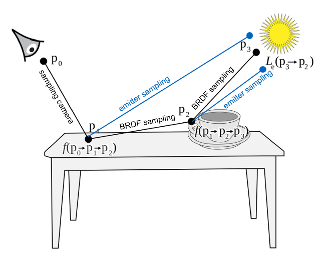

Recent advances in neural rendering have achieved pinpoint reconstruction of 3D scenes from multi-view images. To enable scene editing under different lighting conditions, an increasing number of methods are integrating differentiable surface rendering into the pipelines. However, many of these methods rely heavily on simplified surface rendering algorithms, while considering primarily direct lighting or fixed indirect illumination only. We introduce a more realistic rendering pipeline that embraces multi-bounce Monte-Carlo path tracing. Benefiting from the multi-bounce light path estimation, our method can decompose high-quality material properties without necessitating additional prior knowledge. Additionally, our model can accurately estimate and reconstruct secondary shading effects, such as indirect illumination and self-reflection. We demonstrate the advantages of our model to baseline methods qualitatively and quantitatively across synthetic and real-world scenes.
Multi-bounce Monte-Carlo Ray Tracing

We develop a differentiable inverse path tracer that enables the simulation of light bouncing multiple times within a scene, utilizing Monte Carlo sampling. The simulation of multi-bounce light transport enables a precise reconstruction of the material properties. By simulating an increased number of bounces, the precision of the reconstructed albedo is notably improved. This results in a reduction of indirect lighting being inaccurately embedded into the albedo.
Estimated Albedo
GT Albedo
Relighting Results Synthetic Data
Baseline
Ours
Ground Truth
Baseline
Ours
Ground Truth
In comparison to the baseline approach, our method features more accurate color representation, enhanced realism in specularity, and significantly improved secondary lighting effects (e.g. self-reflection).
Relighting Results Real-world Data
Reference
Relighting 1
Relighting 2
Relighting 3
Material Editing Results
We can also control the diffuse color and the amount of speucularity.
Acknowledgements
Thanks to Peter Kocsis for his guidance, thanks to Minghua Chen for her supports, and to Mohamed Ebbed for his advice. Special thanks to my cats, Huajiao and Danta, for their emotional support.